Managing Payroll
Process description
Process overview
- A payroll assistant will need to input data for a payslip batch, which includes: daily attendance data, overtime attendance data, shift attendances, allowances, deductions, ... In addition, a HR assistant needs to create default parameters for pay calculation such as position pay scale, base salary, PIT information, dependents, ... in the Employees module
- Afterwards, the payroll assistant needs to create pay structures for the whole company or for a certain department/division in the company. Each pay structure consists of many different pay components, depending on job positions.
- Every month, the payroll assistant creates a payslip batch for the whole company or for a certain department/division in the company. A payslip batch consists of all employee payslips in a certain period, with detailed information such as salary, wages, bonuses, allowances and insurances.
- Finally, payslips will be sent to every employee for review and confirmation. After being approved, the payslip batch will be sent to the accounting department to make payments.
Process flows
- Creating input data.
- Creating pay structures.
- Creating payroll sheets.
Creating data for pay calculation
In order to create payroll sheets, a payroll assistant needs to create data for pay calculation, which includes attendance data and default parameters of an employee.
User: Payroll assistant.
Creating default parameters
Default parameters of an employee consist of: Position pay scale, base salary, dependents. These parameters should already be created in the employee records, if otherwise, a HR assistant will need to update all of them for the employee records in the Employees module.
Creating attendance data
Attendance data will be collected from Attendances module, including the following attendance types:
- Standard working days
- Actual working days
- Online working days
- Overtime
- Overtime at night
- Overtime on holidays
- Business travel
- Vacation leaves
- Unpaid leaves
- Holidays
- Sick leaves
- Annual paid leaves
- Accident leaves
- Maternity leaves
- Personal paid leaves
Creating pay structures
User: Payroll assistant.
Procedure:
Step 1: Log in to the system, select Payroll > Configuration > Salary Structures
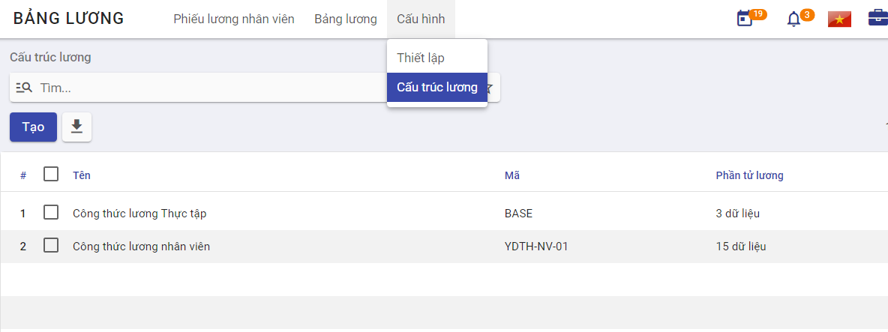
Step 2: Enter general information for the pay structure
-
Name: A name for the pay structure
-
Reference: A code to refer to the pay structure
In the pay component table, the payroll assistant can form a pay structure based on the company's payroll formula by declaring components using parameters from the list of keywords
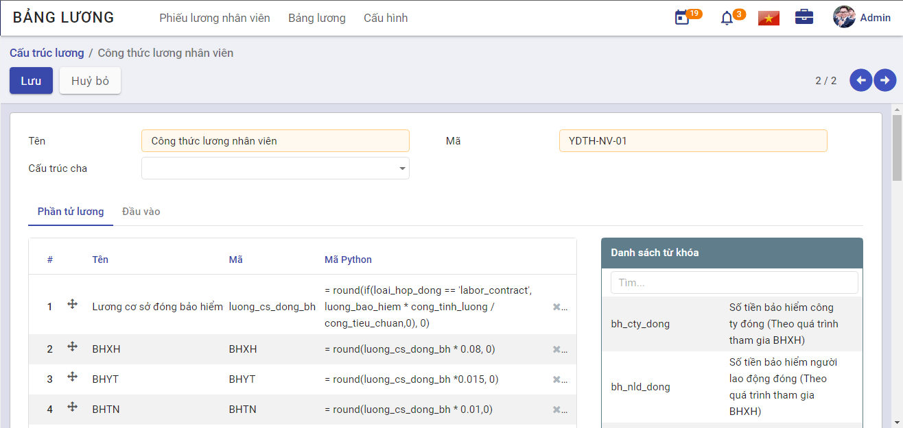
- Salary Rule Sub: Enter a memorable name for the pay component
- Code: Enter a unique and memorable code for each component
- Python Code: Enter a formula to calculate the respective pay component. vESS system provides the following operations:
- Basic operations: Addition, subtraction, multiplication, division
- Round
- If
- ...
- 4-way arrow button: Hold and drag this button to move components up or down so that any component must be able to be calculated from its preceding components.
Creating payroll sheets
User: Payroll assistant.
The payroll assistant needs to complete creating all data for pay calculation before creating monthly payroll sheets.
Procedure:
Step 1: Log in to the system, select Payroll > Payslips Batches > Create
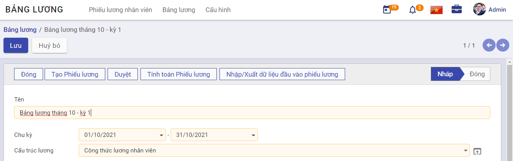
- Name: Enter a name for the payroll sheet.
- Period: Select a timeframe to calculate pay.
- Pay Structure: Select a configured pay structure.
Step 2: Select Generate Payslips, a dialog for employee selection will appear.
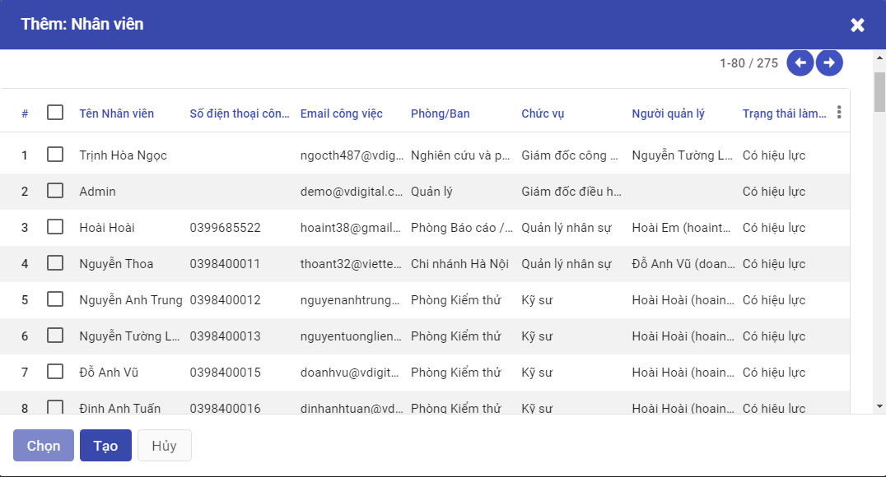
- Check the box on the left of each row to select a certain employee
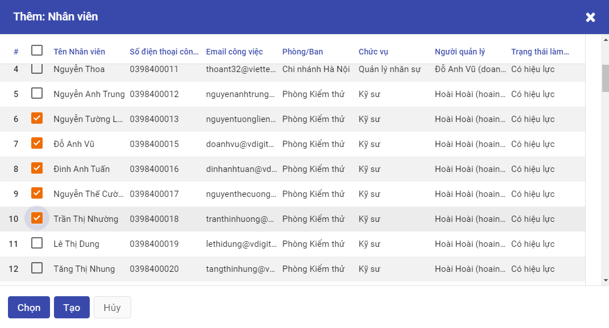
-
Click Select
-
Check the topmost box to select all employees
-
Click Create
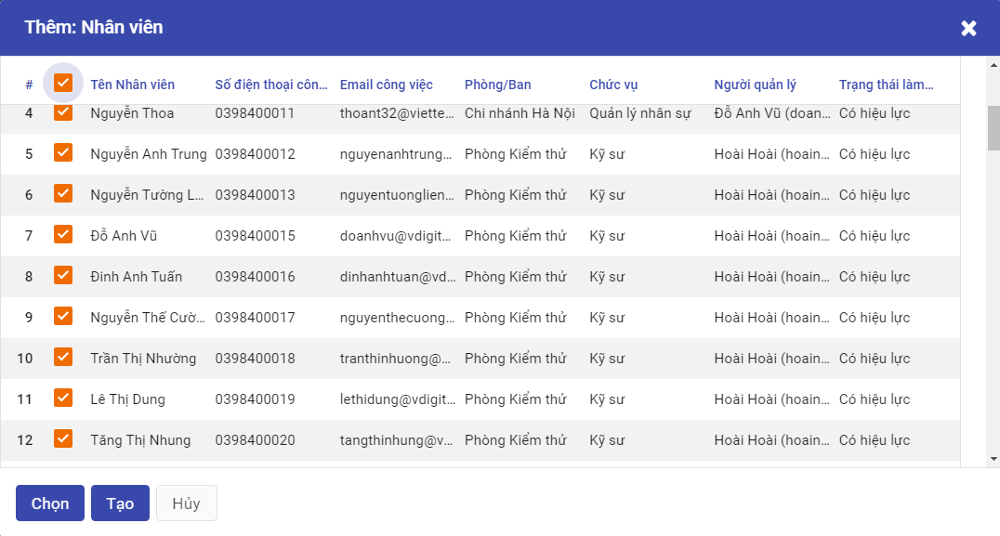
- A list of payslips of the selected employees will be displayed
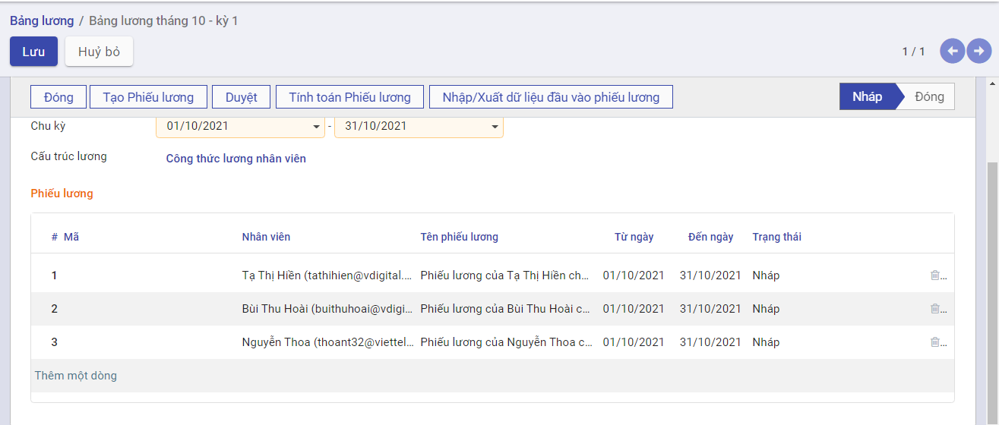
- Select Compute Sheet, a list of computed payslips with status Draft will be displayed. Click a payslip to view details of it.
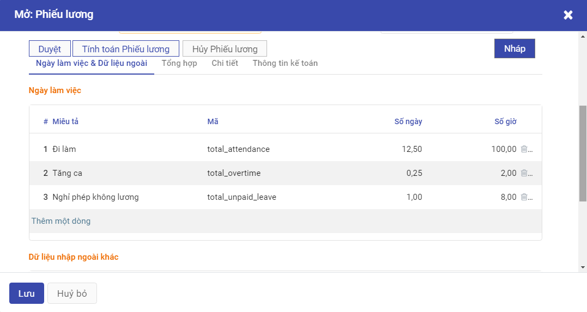
Step 3: The payroll assistant can import/export data of a payslip, which can include sales commission, birthday bonus, ... Select Import/Export payslip inputs>Export template
The payroll assistant should input data into the template and upload it by selecting Import file, the data will be imported into Payslip Details>Other Inputs.
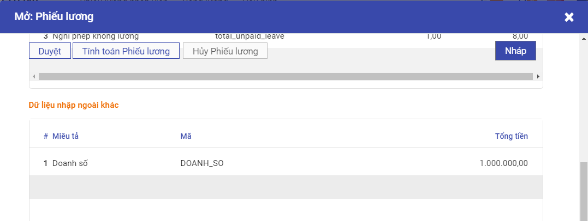
Step 4: Switch to Employee Payslips tab to review all employee payslips before clicking Approve.
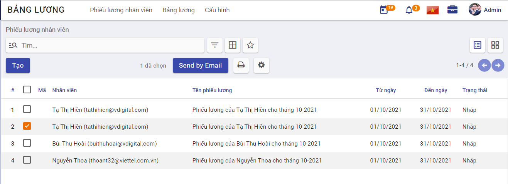
Step 5: Should there be any complaint from employees about payslips, select Employee Payslips > Select payslips mentioned in employee complaints > Edit
If otherwise, select Payslips Batches > Select a payslip batch > Click Approve
Employees will be paid according to their respective payslips after the payslip batch is approved.
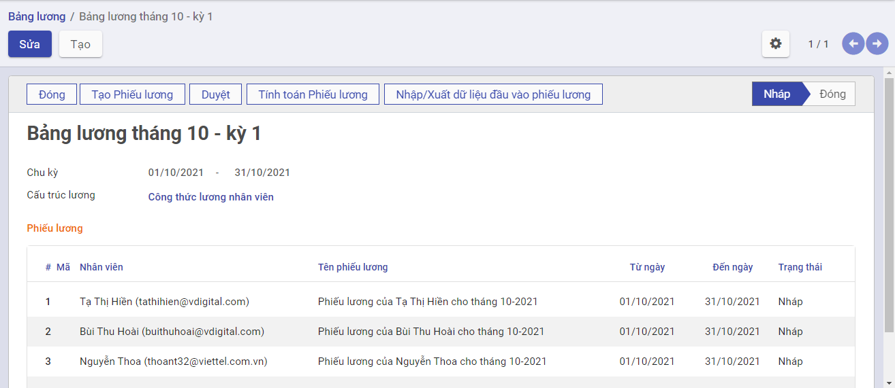